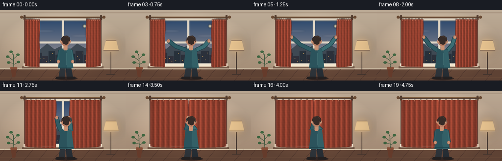
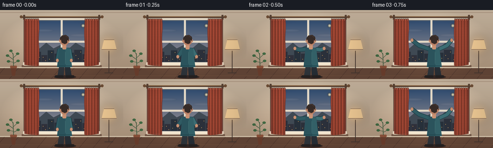

CODING AGENTS AS PIXEL WORLD MODELS
traex/GPT-5.6-Sol · motion_rationality_0054
点击播放 · 原生 RGB 像素
逐轮保存的候选
回放视频、检查图与代码变化。
每份候选均可单独播放。实际图片检查记录在下方工具轨迹中。
候选 01播放与检查图
点击播放 · 原生 RGB 像素


展开代码变化
--- 上一保存版本
+++ 本次保存版本
@@ -0,0 +1,361 @@
+from pathlib import Path
+import math
+
+import numpy as np
+from PIL import Image, ImageDraw, ImageFilter
+
+import artifact_io
+
+
+W, H = 256, 144
+N, FPS = 20, 4.0
+S = 4 # supersampling for clean edges
+
+
+def smoothstep(x):
+ x = max(0.0, min(1.0, x))
+ return x * x * (3.0 - 2.0 * x)
+
+
+def sc(v):
+ return int(round(v * S))
+
+
+def pts(seq):
+ return [(sc(x), sc(y)) for x, y in seq]
+
+
+def line(draw, xy, fill, width, joint="curve"):
+ draw.line(pts(xy), fill=fill, width=sc(width), joint=joint)
+
+
+def ellipse(draw, box, fill, outline=None, width=1):
+ draw.ellipse(tuple(sc(v) for v in box), fill=fill, outline=outline, width=sc(width))
+
+
+def polygon(draw, xy, fill):
+ draw.polygon(pts(xy), fill=fill)
+
+
+def rounded(draw, box, radius, fill, outline=None, width=1):
+ draw.rounded_rectangle(tuple(sc(v) for v in box), radius=sc(radius), fill=fill,
+ outline=outline, width=sc(width))
+
+
+def gradient_background(frame_i):
+ """Warm room wall with a very subtle exposure change as curtains close."""
+ close = smoothstep((frame_i - 4) / 11)
+ yy = np.linspace(0, 1, H * S, dtype=np.float32)[:, None, None]
+ top = np.array([208, 190, 167], dtype=np.float32)
+ bot = np.array([177, 151, 126], dtype=np.float32)
+ arr = top[None, None, :] * (1 - yy) + bot[None, None, :] * yy
+ arr = np.repeat(arr, W * S, axis=1)
+ # The room becomes gently warmer and dimmer when the blue window is covered.
+ arr *= (1.0 - 0.025 * close)
+ arr[:, :, 0] += 3.0 * close
+ return Image.fromarray(np.clip(arr, 0, 255).astype(np.uint8), "RGB")
+
+
+def draw_window(img, frame_i):
+ d = ImageDraw.Draw(img)
+ # Recess and frame shadows.
+ rounded(d, (49, 14, 207, 117), 2, (91, 69, 59))
+ rounded(d, (52, 16, 204, 114), 1, (230, 219, 199))
+ rounded(d, (57, 21, 199, 109), 0.5, (78, 91, 105))
+
+ # Painted dusk sky inside the glass.
+ x0, y0, x1, y1 = sc(59), sc(23), sc(197), sc(107)
+ h, w = y1 - y0, x1 - x0
+ yy = np.linspace(0, 1, h, dtype=np.float32)[:, None, None]
+ sky_top = np.array([49, 76, 111], dtype=np.float32)
+ sky_mid = np.array([121, 124, 137], dtype=np.float32)
+ sky_low = np.array([217, 151, 112], dtype=np.float32)
+ sky = np.empty((h, w, 3), dtype=np.float32)
+ split = 0.67
+ upper = np.minimum(yy / split, 1)
+ lower = np.maximum((yy - split) / (1 - split), 0)
+ col = sky_top * (1 - upper) + sky_mid * upper
+ col = col * (1 - lower) + sky_low * lower
+ sky[:] = col
+ img.paste(Image.fromarray(sky.astype(np.uint8), "RGB"), (x0, y0))
+ d = ImageDraw.Draw(img)
+
+ # Distant clouds, moon and skyline: enough detail to make the closing visible.
+ cloud = Image.new("RGBA", img.size, (0, 0, 0, 0))
+ cd = ImageDraw.Draw(cloud)
+ ellipse(cd, (69, 40, 111, 45), (210, 200, 194, 25))
+ ellipse(cd, (145, 50, 188, 55), (230, 205, 195, 22))
+ ellipse(cd, (169, 29, 176, 36), (247, 230, 183, 215))
+ cloud = cloud.filter(ImageFilter.GaussianBlur(sc(1.2)))
+ img.alpha_composite(cloud) if img.mode == "RGBA" else img.paste(cloud, (0, 0), cloud)
+ d = ImageDraw.Draw(img)
+
+ # Far hills.
+ polygon(d, [(59, 84), (70, 76), (82, 80), (96, 68), (111, 80),
+ (125, 73), (141, 82), (157, 68), (174, 78), (187, 71),
+ (197, 80), (197, 108), (59, 108)], (63, 73, 83))
+ # City silhouette and tiny window lights.
+ buildings = [(60, 91, 72, 108), (73, 87, 85, 108), (86, 94, 98, 108),
+ (99, 84, 112, 108), (113, 91, 126, 108), (127, 79, 140, 108),
+ (141, 89, 153, 108), (154, 83, 170, 108), (171, 92, 183, 108),
+ (184, 86, 197, 108)]
+ for j, b in enumerate(buildings):
+ d.rectangle(tuple(sc(v) for v in b), fill=(39 + j % 3 * 4, 48, 58))
+ bx0, by0, bx1, by1 = b
+ for wx in np.arange(bx0 + 3, bx1 - 1, 5):
+ for wy in np.arange(by0 + 4, by1 - 2, 7):
+ if (int(wx + wy + j) % 3) == 0:
+ d.rectangle((sc(wx), sc(wy), sc(wx + 1), sc(wy + 1)),
+ fill=(229, 178, 98))
+ # Window mullions and glass highlights.
+ d.rectangle((sc(126), sc(21), sc(130), sc(109)), fill=(226, 216, 198))
+ d.rectangle((sc(57), sc(64), sc(199), sc(68)), fill=(225, 214, 196))
+ line(d, [(61, 25), (61, 61)], (255, 255, 255), 0.7)
+ # Sill, with highlight and cast shadow.
+ d.rectangle((sc(48), sc(109), sc(208), sc(115)), fill=(242, 229, 207))
+ d.rectangle((sc(45), sc(115), sc(211), sc(119)), fill=(119, 91, 74))
+ d.rectangle((sc(49), sc(115), sc(207), sc(116)), fill=(199, 178, 153))
+
+
+def curtain_layer(side, edge, frame_i):
+ """Return an anti-aliased, shaded curtain panel and its leading-edge points."""
+ layer = Image.new("RGBA", (W * S, H * S), (0, 0, 0, 0))
+ mask = Image.new("L", layer.size, 0)
+ md = ImageDraw.Draw(mask)
+
+ top, bottom = 18.5, 116.0
+ if side == "left":
+ outer = 50.5
+ # A slightly rippling free edge; the hand grips around y=55.
+ free = [(edge + 0.55 * math.sin((y - 20) * .115), y)
+ for y in np.linspace(top, bottom, 32)]
+ shape = [(outer, top)] + [(edge, top)] + free[1:] + [
+ (edge - 4, bottom + 1.2), (outer + 11, bottom - .2), (outer, bottom - 2)]
+ anchor = outer
+ sign = 1
+ else:
+ outer = 205.5
+ free = [(edge + 0.55 * math.sin((y - 20) * .115 + 1.6), y)
+ for y in np.linspace(top, bottom, 32)]
+ shape = [(outer, top), (outer, bottom - 2), (outer - 11, bottom - .2),
+ (edge + 4, bottom + 1.2)] + list(reversed(free)) + [(edge, top)]
+ anchor = outer
+ sign = -1
+ md.polygon(pts(shape), fill=255)
+
+ # Fabric shading: persistent vertical folds stretch naturally as panel opens.
+ yy, xx = np.mgrid[0:H * S, 0:W * S].astype(np.float32)
+ xf = xx / S
+ yf = yy / S
+ span = max(22.0, abs(edge - anchor))
+ fold_w = max(6.0, span / 7.4)
+ phase = (xf - anchor) / fold_w * 2 * math.pi
+ fold = 0.70 + 0.14 * np.cos(phase) + 0.045 * np.cos(phase * 2 + .7)
+ # Warm terracotta linen; subtle texture is deterministic and temporal-stable.
+ texture = 0.018 * np.sin(xf * 2.27 + yf * .41) + 0.012 * np.sin(yf * 1.81)
+ vertical = 1.0 - 0.10 * (yf / H)
+ light_side = 0.05 * sign * (xf - anchor) / span
+ lum = np.clip(fold + texture + light_side, .50, 1.02) * vertical
+ base = np.array([177, 79, 58], dtype=np.float32)
+ rgb = np.clip(base[None, None, :] * lum[:, :, None] + np.array([20, 8, 6]), 0, 255)
+ alpha = np.asarray(mask, dtype=np.uint8)
+ rgba = np.dstack([rgb.astype(np.uint8), alpha])
+ panel = Image.fromarray(rgba, "RGBA")
+ layer.alpha_composite(panel)
+
+ # Hem, leading seam and top pleat highlights.
+ dd = ImageDraw.Draw(layer)
+ if side == "left":
+ seam = free
+ line(dd, [(outer + 1, 19), (outer + 1, 113)], (104, 43, 38, 190), 1)
+ else:
+ seam = free
+ line(dd, [(outer - 1, 19), (outer - 1, 113)], (104, 43, 38, 190), 1)
+ line(dd, seam, (104, 43, 38, 220), 1.0)
+ line(dd, [(shape[-3][0], 114.7), (shape[-2][0], 115.3)], (111, 47, 40, 140), .8)
+
+ # Curtain rings follow the rod; panel widths determine spacing.
+ if side == "left":
+ rings = np.linspace(53, max(56, edge - 2), 7)
+ else:
+ rings = np.linspace(min(202, edge + 2), 203, 7)
+ for rx in rings:
+ ellipse(dd, (rx - 1.15, 14.8, rx + 1.15, 19.6), (77, 54, 43, 0),
+ outline=(76, 58, 47, 255), width=.65)
+ line(dd, [(rx, 19.3), (rx, 21.5)], (225, 128, 92, 220), .65)
+ return layer
+
+
+def draw_room_details(img):
+ d = ImageDraw.Draw(img)
+ # Ceiling line and walnut floor.
+ d.rectangle((0, sc(4), sc(256), sc(6)), fill=(188, 166, 143))
+ d.rectangle((0, sc(119), sc(256), sc(144)), fill=(104, 73, 57))
+ d.rectangle((0, sc(119), sc(256), sc(121)), fill=(225, 207, 181))
+ for x in range(-10, 280, 29):
+ line(d, [(x, 144), (x + 19, 121)], (83, 57, 47), .65)
+ line(d, [(0, 137), (256, 137)], (127, 89, 65), .55)
+
+ # Left plant and pot, kept quiet so the action remains dominant.
+ polygon(d, [(22, 120), (34, 120), (31, 137), (25, 137)], (112, 65, 48))
+ rounded(d, (21, 116, 35, 121), 1.5, (147, 87, 62))
+ line(d, [(28, 117), (27, 90)], (64, 91, 64), 1.2)
+ for bx, by, ex, ey in [(27, 103, 16, 95), (27, 100, 37, 91), (27, 109, 18, 107),
+ (28, 94, 23, 85), (28, 111, 38, 106)]:
+ line(d, [(bx, by), (ex, ey)], (57, 87, 60), 1)
+ ellipse(d, (ex - 4, ey - 2.5, ex + 3, ey + 2.5), (67, 107, 68))
+
+ # Small glowing floor lamp at right.
+ line(d, [(226, 85), (226, 130)], (69, 55, 49), 1.4)
+ line(d, [(217, 131), (235, 131)], (69, 55, 49), 1.6)
+ glow = Image.new("RGBA", img.size, (0, 0, 0, 0))
+ gd = ImageDraw.Draw(glow)
+ ellipse(gd, (205, 52, 247, 94), (255, 187, 98, 70))
+ glow = glow.filter(ImageFilter.GaussianBlur(sc(9)))
+ img.paste(glow, (0, 0), glow)
+ d = ImageDraw.Draw(img)
+ polygon(d, [(216, 62), (237, 62), (242, 82), (211, 82)], (230, 194, 143))
+ line(d, [(216, 62), (237, 62)], (112, 84, 66), .8)
+ line(d, [(211, 82), (242, 82)], (112, 84, 66), .8)
+
+
+def draw_rod(img):
+ d = ImageDraw.Draw(img)
+ # shadow then brass-colored rod and finials
+ line(d, [(45, 14.8), (211, 14.8)], (71, 49, 40), 3.2)
+ line(d, [(45, 13.7), (211, 13.7)], (135, 100, 67), 2.0)
+ ellipse(d, (41, 11, 47, 17), (117, 83, 57))
+ ellipse(d, (209, 11, 215, 17), (117, 83, 57))
+ rounded(d, (48, 10, 52, 20), 1, (93, 68, 53))
+ rounded(d, (204, 10, 208, 20), 1, (93, 68, 53))
+
+
+def draw_person(img, frame_i, left_edge, right_edge):
+ d = ImageDraw.Draw(img)
+ # Three readable phases: raise -> pull -> release.
+ raise_p = smoothstep(frame_i / 4.0)
+ release_p = smoothstep((frame_i - 15.0) / 4.0)
+ pull_p = smoothstep((frame_i - 4.0) / 11.0)
+
+ sway = 1.1 * math.sin(math.pi * pull_p) - 0.5 * release_p
+ body_x = 133.5 + sway
+ step = 1.4 * math.sin(math.pi * pull_p)
+ shoulder_y = 80.5 + step
+
+ left_start = (119.0, 105.0)
+ right_start = (148.0, 105.0)
+ left_grip = (left_edge + 1.4, 55.0)
+ right_grip = (right_edge - 1.4, 55.0)
+ lx = left_start[0] * (1 - raise_p) + left_grip[0] * raise_p
+ ly = left_start[1] * (1 - raise_p) + left_grip[1] * raise_p
+ rx = right_start[0] * (1 - raise_p) + right_grip[0] * raise_p
+ ry = right_start[1] * (1 - raise_p) + right_grip[1] * raise_p
+ # After the fabric meets, the person lets go and lowers both hands.
+ lx = lx * (1 - release_p) + (body_x - 13, 106)[0] * release_p
+ ly = ly * (1 - release_p) + 106 * release_p
+ rx = rx * (1 - release_p) + (body_x + 14) * release_p
+ ry = ry * (1 - release_p) + 106 * release_p
+
+ ls = (body_x - 10, shoulder_y + 1)
+ rs = (body_x + 10, shoulder_y + 1)
+ # Elbows bow outward when reaching wide and relax toward the torso later.
+ le = ((ls[0] + lx) * .5 - 3.5 * (1 - pull_p) * raise_p,
+ (ls[1] + ly) * .5 + 2.0)
+ re = ((rs[0] + rx) * .5 + 3.5 * (1 - pull_p) * raise_p,
+ (rs[1] + ry) * .5 + 2.0)
+
+ # Ground shadow and legs.
+ ellipse(d, (112, 136, 158, 143), (55, 40, 36))
+ polygon(d, [(123, 116), (134, 116), (132, 139), (119, 139)], (46, 52, 58))
+ polygon(d, [(134, 116), (145, 116), (149, 139), (136, 139)], (39, 46, 53))
+ rounded(d, (114, 136, 132, 141), 2, (38, 34, 34))
+ rounded(d, (136, 136, 154, 141), 2, (38, 34, 34))
+
+ # Arms first so the torso makes clean shoulder joints.
+ sleeve = (48, 91, 99)
+ sleeve_hi = (60, 109, 115)
+ line(d, [ls, le, (lx, ly)], (31, 66, 75), 9.2)
+ line(d, [rs, re, (rx, ry)], (31, 66, 75), 9.2)
+ line(d, [ls, le, (lx, ly)], sleeve, 6.8)
+ line(d, [rs, re, (rx, ry)], sleeve_hi, 6.8)
+
+ # Sweater torso with hem and a center fold.
+ polygon(d, [(body_x - 11, shoulder_y - 2), (body_x + 11, shoulder_y - 2),
+ (body_x + 16, 119), (body_x - 15, 119)], (43, 83, 92))
+ polygon(d, [(body_x + 2, shoulder_y - 2), (body_x + 11, shoulder_y),
+ (body_x + 16, 119), (body_x + 3, 119)], (51, 96, 103))
+ line(d, [(body_x - 14, 116.5), (body_x + 15, 116.5)], (31, 68, 76), 1.3)
+ line(d, [(body_x + 2, 88), (body_x + 2, 112)], (67, 112, 116), .65)
+
+ # Hands remain visibly seated on the fabric edge during the pull.
+ skin = (201, 145, 115)
+ ellipse(d, (lx - 3.1, ly - 3.8, lx + 3.1, ly + 3.8), skin,
+ outline=(129, 85, 72), width=.55)
+ ellipse(d, (rx - 3.1, ry - 3.8, rx + 3.1, ry + 3.8), skin,
+ outline=(129, 85, 72), width=.55)
+ if raise_p > .82 and release_p < .35:
+ # Tiny finger marks wrap around each leading seam.
+ line(d, [(lx - 1.4, ly - 1.2), (lx + 1.9, ly - .8)], (124, 79, 68), .45)
+ line(d, [(rx - 1.9, ry - .8), (rx + 1.4, ry - 1.2)], (124, 79, 68), .45)
+
+ # Neck and head, viewed from behind.
+ rounded(d, (body_x - 4, 69, body_x + 4, 82), 2, skin)
+ ellipse(d, (body_x - 9.7, 52.5, body_x + 9.7, 73.5), (185, 127, 100))
+ # Ears are mostly hidden by short, dark hair.
+ ellipse(d, (body_x - 11, 61, body_x - 7.5, 67), skin)
+ ellipse(d, (body_x + 7.5, 61, body_x + 11, 67), skin)
+ polygon(d, [(body_x - 9.4, 64), (body_x - 9, 58), (body_x - 5, 53),
+ (body_x + 3, 51.5), (body_x + 9, 56), (body_x + 9.5, 65),
+ (body_x + 6.5, 62), (body_x + 5.5, 69), (body_x + 1, 71),
+ (body_x - 5.5, 68), (body_x - 7, 61)], (54, 43, 39))
+ # A few hair highlights keep the silhouette dimensional.
+ line(d, [(body_x - 4, 54), (body_x + 2, 53), (body_x + 7, 57)], (80, 61, 51), .7)
+
+
+def render_frame(i):
+ close_p = smoothstep((i - 4.0) / 11.0)
+ # Both free edges move only while the person's hands are gripping them.
+ left_edge = 80.5 + (128.7 - 80.5) * close_p
+ right_edge = 175.5 + (127.3 - 175.5) * close_p
+
+ img = gradient_background(i).convert("RGBA")
+ draw_room_details(img)
+ draw_window(img, i)
+ # Rod is behind the rings but remains visible above the cloth.
+ draw_rod(img)
+ img.alpha_composite(curtain_layer("left", left_edge, i))
+ img.alpha_composite(curtain_layer("right", right_edge, i))
+ draw_person(img, i, left_edge, right_edge)
+
+ # Gentle vignette integrates the scene without obscuring the action.
+ yy, xx = np.mgrid[0:H * S, 0:W * S].astype(np.float32)
+ dx = (xx - W * S / 2) / (W * S / 2)
+ dy = (yy - H * S / 2) / (H * S / 2)
+ vig = np.clip((dx * dx + dy * dy - .42) * 42, 0, 24).astype(np.uint8)
+ shade = Image.fromarray(np.dstack([np.zeros_like(vig), np.zeros_like(vig),
+ np.zeros_like(vig), vig]), "RGBA")
+ img.alpha_composite(shade)
+ img = img.convert("RGB").resize((W, H), Image.Resampling.LANCZOS)
+ return np.asarray(img, dtype=np.uint8)
+
+
+def main():
+ frames = np.stack([render_frame(i) for i in range(N)], axis=0)
+ case_dir = Path(__file__).resolve().parent
+ artifact_io.save(frames, case_dir)
+
+ # A conventional RGB MP4 is useful in addition to the required HTML/NPZ player.
+ try:
+ import cv2
+ writer = cv2.VideoWriter(str(case_dir / "video.mp4"),
+ cv2.VideoWriter_fourcc(*"mp4v"), FPS, (W, H))
+ if writer.isOpened():
+ for frame in frames:
+ writer.write(cv2.cvtColor(frame, cv2.COLOR_RGB2BGR))
+ writer.release()
+ except Exception:
+ pass
+
+
+if __name__ == "__main__":
+ main()
可观测工具轨迹
实际执行的命令与返回图片。
命令 1exit 0
/bin/bash -lc "cat prompt.txt && printf '\\n--- GENERATION_RULES.md ---\\n' && cat GENERATION_RULES.md"
命令 2exit 0
/bin/bash -lc "cat task_spec.json && printf '\\n--- FILES ---\\n' && find . -maxdepth 2 -type f -printf '%p\\n' | sort"
命令 3exit 0
/bin/bash -lc "command -v ffmpeg; command -v python3; python3 - <<'PY' mods=['PIL','numpy','cv2','imageio','scipy'] for m in mods: try: x=__import__(m); print(m,'OK',getattr(x,'__version__','')) except Exception as e: print(m,'NO',e) PY"
命令 4exit 0
/bin/bash -lc 'cat artifact_io.py'
命令 5exit 0
/bin/bash -lc 'python3 generate.py'
命令 6exit 0
/bin/bash -lc 'if command -v ffprobe >/dev/null; then ffprobe -v error -show_entries stream=codec_name,pix_fmt,width,height,r_frame_rate,nb_frames,duration -of default=noprint_wrappers=1 video.mp4; else echo no-ffprobe; fi'
命令 7exit 0
/bin/bash -lc "python3 - <<'PY'
from pathlib import Path
import numpy as np
from PIL import Image
p=Path('.')
files=sorted((p/'frames').glob('*.png'))
print('frame_count',len(files))
for j in [0,1,4,8,12,15,19]:
im=Image.open(files[j]); print(j, im.mode, im.size, np.asarray(im).dtype, tuple(np.asarray(im).mean(axis=(0,1)).round(1)))
z=np.load('pixels.npz')['pixels']
print('pixels',z.shape,z.dtype)
frames=np.stack([np.asarray(Image.open(f)) for f in files])
mad=np.abs(frames[1:].astype(int)-frames[:-1].astype(int)).mean(axis=(1,2,3))
print('consecutive_MAD',np.round(mad,2).tolist())
print('all_unique',len({f.tobytes() for f in frames})==len(frames))
print('artifacts',[(x.name,x.stat().st_size) for x in [p/'pixels.npz',p/'index.html',p/'inspection.png',p/'transition_check.png',p/'video.mp4']])
PY"命令 8exit 0
/bin/bash -lc 'python3 -m py_compile generate.py artifact_io.py && git status --short'
命令 9exit 0
/bin/bash -lc "python3 - <<'PY'
import cv2, numpy as np
cap=cv2.VideoCapture('video.mp4')
count=0
shapes=[]
while True:
ok, im=cap.read()
if not ok: break
count+=1; shapes.append(im.shape)
print({'opened':cap.isOpened(),'frames':count,'fps':cap.get(cv2.CAP_PROP_FPS),'size':(int(cap.get(cv2.CAP_PROP_FRAME_WIDTH)),int(cap.get(cv2.CAP_PROP_FRAME_HEIGHT))),'duration_s': count/cap.get(cv2.CAP_PROP_FPS) if cap.get(cv2.CAP_PROP_FPS) else None,'decoded_shapes':sorted(set(shapes))})
cap.release()
# Verify increasing curtain coverage at the window's middle row.
from PIL import Image
vals=[]
for i in range(20):
a=np.asarray(Image.open(f'frames/{i:02}.png'))
# fabric-like red dominance in window bounds
q=a[20:110,55:201]
vals.append(int(((q[:,:,0]>q[:,:,1]*1.25)&(q[:,:,0]>q[:,:,2]*1.35)).sum()))
print('curtain_coverage_proxy',vals)
PY"保存候选 1 份；完成命令 9 次；可验证图片返回 0 张。原始 API 响应与完整日志保留在本地。